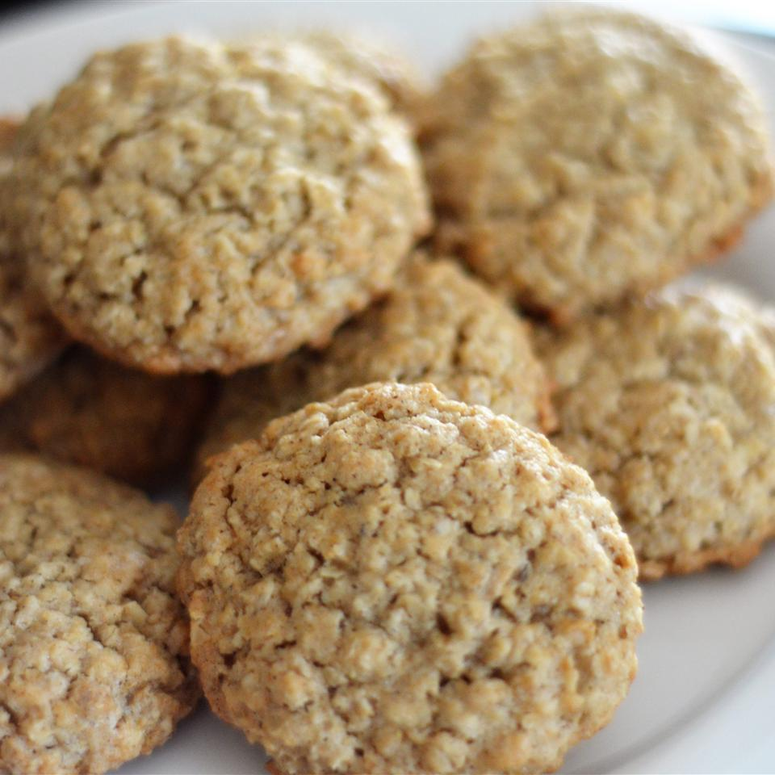

Oatmeal Cookies Recipe

Description
This is my aunt Ana's oatmeal cookie recipe. She prepares them every Christmas!
Ingredients
- 2 sticks unsalted butter
- .5 cup of sugar
- 1.25 cups of brown sugar
- 2 large eggs
- 2 tbsp whole milk
- 2 tsp vanilla extract
- 1.75 cups all purpose flour
- 1 tsp baking powder
- .25 tsp salt
- 2.5 cups oatmeal
- 1 cup walnuts
- 1 cup raisins
- 1 cup chocolate chips
Steps
- Mix butter and sugars until creamy in a mixing bowl
- Add eggs, milk and vanilla extract. Mix
- Add flour, baking powder and salt
- Mix separately: oatmeal, walnuts, raisins and chocolate chips
- Add to batter
- Bake @ 350 degrees for 15 minutes
Return to previous page